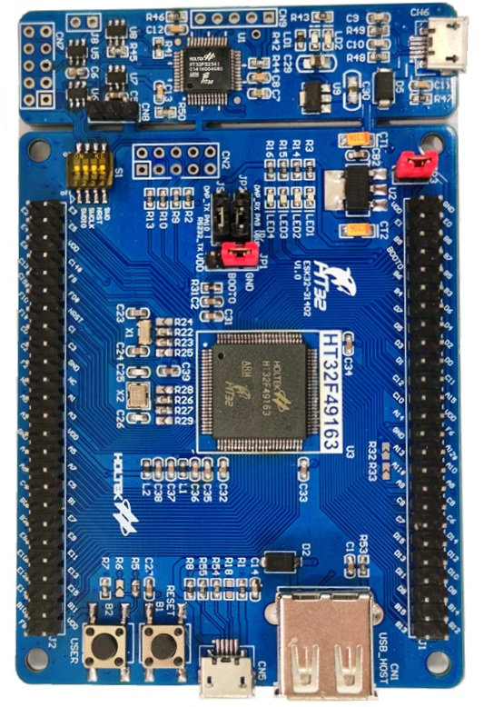

ESK32 (HT32F49163)
The ESK32 is a development board based on the Holtek HT32F49163 MCU. The current NuttX port targets the HT32F49163 device used on the HT32F49163 development kit and focuses on a working serial-console NSH configuration with basic board bring-up plus timer-based PWM validation.
For additional hardware details, refer to Holtek’s HT32F491x3 Starter Kit User Guide.

HT32F491x3 Starter Kit board photo
Features
The current port provides:
Holtek HT32F49163 MCU from the HT32F491x3 family
ARM Cortex-M4 core with FPU support
Boot and clock initialization for the ESK32 8 MHz external crystal
System clock configured to 150 MHz
USART1 serial console at 115200 8N1
TMR3 PWM outputs exposed through
/dev/pwm0../dev/pwm3/binmounted throughbinfs/procmounted throughprocfsUser LED registration through
/dev/userledsBasic internal GPIO helpers used by the console and LED support
The default esk32:nsh configuration also enables these built-in
applications:
helloostestdumpstackleds
The esk32:pwm configuration keeps the same board bring-up and adds the
pwm example application together with a board-level PWM device at
/dev/pwm0 .. /dev/pwm3.
Pin Mapping
The current port uses the following MCU pins:
Pin |
Signal |
Notes |
|---|---|---|
PA6 |
TMR3_CH1 |
|
PA7 |
TMR3_CH2 |
|
PA9 |
USART1_TX |
Default serial console TX |
PA10 |
USART1_RX |
Default serial console RX |
PB0 |
TMR3_CH3 |
|
PB1 |
TMR3_CH4 |
|
PD13 |
LED2 |
User LED, active-low |
PD14 |
LED3 |
User LED, active-low |
PD15 |
LED4 |
User LED, active-low |
Flashing
The board directory includes a helper script for flashing through Holtek’s Windows OpenOCD package from a WSL-based development environment:
$ ./boards/arm/ht32f491x3/esk32/tools/flash.sh
The script expects:
nuttx.binalready generated in thenuttxdirectoryHoltek xPack OpenOCD installed under
C:\Program Files (x86)\Holtek HT32 Series\HT32-IDE\xPack\xpack-openocd-0.11.0-4an HT32-Link compatible debug connection
Holtek xPack OpenOCD can be installed together with the HT32 IDE, available from Holtek’s website: Holtek Downloads
Useful options:
$ ./boards/arm/ht32f491x3/esk32/tools/flash.sh --dry-run
$ ./boards/arm/ht32f491x3/esk32/tools/flash.sh --device HT32F49163_100LQFP
$ ./boards/arm/ht32f491x3/esk32/tools/flash.sh --openocd-root /mnt/c/path/to/openocd
Testing Notes
The following commands are useful for validating the current port:
nsh> hello
nsh> ostest
nsh> dumpstack
nsh> leds
When leds is executed, the example opens /dev/userleds and cycles
through the LED bitmasks supported by the board.
The esk32:pwm configuration also exposes /dev/pwm0 through TMR3. The
default defconfig selects CONFIG_HT32F491X3_TMR3_CHANNEL=1, so the PWM
signal is routed to PA6. Probe PA6 against board GND and run:
nsh> pwm -f 1000 -d 50 -t 5
This command starts a 1 kHz PWM waveform with a 50% duty cycle for 5 seconds.
On the default channel that corresponds to a 1 ms period with a 500 us high
pulse on PA6. A typical console log is:
nsh> pwm -f 1000 -d 50 -t 5
pwm_main: starting output with frequency: 1000 duty: 00007fff
pwm_main: stopping output
Peripheral Support
Peripheral |
Support |
Notes |
|---|---|---|
Boot / Clock / IRQ |
Yes |
Board start-up, clock tree and tick |
UART |
Yes |
USART1 console |
GPIO |
Partial |
Internal helpers only |
LEDs |
Yes |
|
Buttons |
No |
|
PWM |
Yes |
TMR3 exposed as |
Pulse Counter |
No |
|
Timers |
Partial |
OS tick and TMR3 PWM |
SPI |
No |
|
I2C |
No |
|
ADC |
No |
|
DAC |
No |
|
CAN |
No |
|
DMA |
No |
|
RTC / ERTC |
No |
|
I2S |
No |
|
Watchdog |
No |
|
USB Device |
No |
|
USB Host |
No |
|
External Interrupts |
No |
|
Power Control |
No |
Configurations
nsh
This is the currently maintained configuration for the board. It provides a
serial console with the NuttShell and mounts /bin and /proc during
board bring-up.
Configure and build it from the nuttx directory:
$ ./tools/configure.sh -l esk32:nsh
$ make -j
After boot, a typical prompt looks like:
NuttShell (NSH) NuttX-12.x.x
nsh> ls /
/:
bin/
dev/
proc/
And the built-in applications can be listed with:
nsh> ls /bin
dd
dumpstack
hello
leds
nsh
ostest
sh
pwm
This configuration enables the generic PWM framework, registers the TMR3
lower-half driver as /dev/pwm0 .. /dev/pwm3, and includes the pwm example
application for board-level validation.
Configure and build it from the nuttx directory:
$ ./tools/configure.sh -l esk32:pwm
$ make olddefconfig
$ make -j
After flashing the image, the following command can be used from NSH to
validate PWM generation on /dev/pwm0:
nsh> pwm -f 1000 -d 50 -t 5
The expected result is a 1 kHz, 50% duty-cycle waveform on PA6 for 5
seconds, followed by the application stopping the output. A typical console
log is:
nsh> pwm -f 1000 -d 50 -t 5
pwm_main: starting output with frequency: 1000 duty: 00007fff
pwm_main: stopping output
The additional TMR3 outputs are also registered:
/dev/pwm0:PA6/ TMR3_CH1/dev/pwm1:PA7/ TMR3_CH2/dev/pwm2:PB0/ TMR3_CH3/dev/pwm3:PB1/ TMR3_CH4
All four device nodes share the same underlying TMR3 instance, so they must
run at the same PWM frequency. Starting one channel at a different frequency
while another channel is active returns -EBUSY.